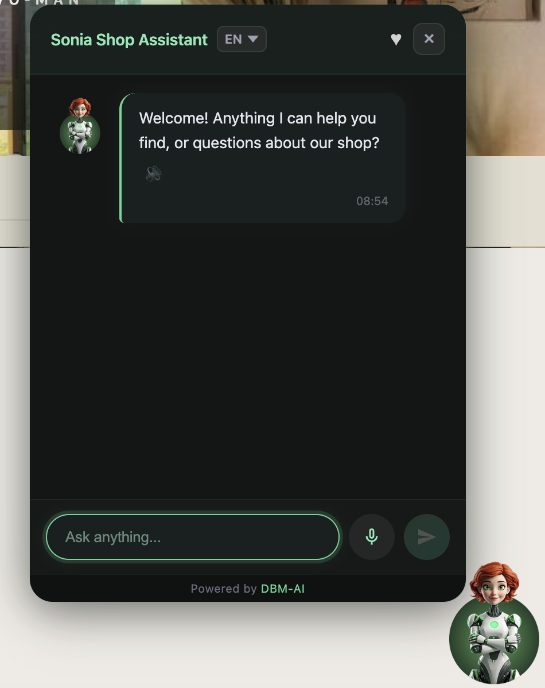

Try the live demodemo.dbm-ai.com: Sonia running on seven demo shops. Ask about products, prices, delivery, or switch her personality.
Summary
Sonia is the shop assistant in FormAI, DBM AI's product for online shops. One script tag adds two assistants to a
website: Sonia, who answers product and shop questions, and A2, who helps visitors fill in forms. Both live in one
chat panel inside a closed Shadow DOM, so the shop's styles and scripts cannot break it and it cannot break the shop.
Sonia's product search is built from the shop's own WooCommerce data. When a shop's host blocks requests from our
servers, which some small hosting providers do to every datacenter IP address, the search moves into the shopper's
browser: our server plans the queries, the browser runs them against the shop's public API from the shop's own page,
and our server writes the answer from the real results.
1. What Sonia and A2 do

Sonia on a shop page. Language selector, wishlist, voice input and read-aloud replies.
Sonia works like a good shop assistant. She finds products, gives the exact details (SKU, price, stock,
sizes, colours), compares items, makes suggestions, answers questions about delivery, returns and contact details,
and hands the conversation to a person when the visitor asks for one. She offers the wishlist after showing
products and a restock alert when something is out of stock. She speaks in one of eleven personality presets that
the shop owner picks, and visitors can type or talk to her and hear her reply. Her answers must come only from data
her tools return: she never invents a product, a price, a currency or a policy.
A2 is the form helper. It finds every form on the page, including forms added later by single-page apps
and AJAX, puts a ? button and a microphone next to each field, explains what a field needs, and chats
about the form in the language set for it. Before anything leaves the browser, personal data such as email addresses, phone numbers, card
numbers and IBANs is swapped for placeholders, using checksums to avoid false matches, so the language model only
ever sees the placeholders. The real values are put back when the reply arrives.
The same data also powers AI Search: a visitor types something like “orange leather bag under 300”
into the shop's own search box and lands on the shop's filtered results page, with a short note on how the query
was understood.
2. One script tag, one Shadow DOM
An assistant that sits on other people's websites has to survive their CSS. Shop themes reset every element,
use !important freely and load dozens of plugins. A widget built with ordinary page elements gets
restyled by the theme, and its own styles leak into the shop. So the chat panel is built inside a closed
Shadow DOM: a separate DOM tree attached to one host element, with its own styles. The theme's CSS stops at
the boundary, the widget's CSS stays inside, and in closed mode the page's scripts cannot reach in either.
A2 lives in two places at once. Its ? and microphone buttons have to sit next to the shop's own form fields,
so they are added to the page itself, with inline styles to keep clashes small. Its conversation lives in the
same panel as Sonia's. Pressing “Chat” in a field's help switches the panel to A2 mode, keeps
Sonia's messages aside, and shows a toggle to switch back. Each mode keeps its own history, so the visitor can move
between “help me with this form” and “do you have this in blue?” without losing either.
Figure 1. One script tag, two places on the page. A2's buttons sit beside the shop's own fields; both
conversations share one panel inside a closed Shadow DOM.
3. How the search is built
“Orange leather bag under 300” is only searchable if the assistant knows the shop calls that category
Genți, that colour is an attribute called Culoare with a term Portocaliu, and that prices are in
lei. So every shop gets a store schema, built from its WooCommerce data, with seven parts:
categories, attributes with their terms, tags and brands: the shop's own vocabulary;
price range, currency and total products: so prices and counts in answers are right.
A router model reads the visitor's question with this schema in view and turns it into precise search parameters:
a category, attribute terms, a price limit, a sort order. The search then runs against the shop's real catalogue,
and the answer model writes the reply from the products that come back.
The schema can be built two ways:
Server path. Our server reads the shop's WooCommerce REST API with the keys the WordPress plugin set up,
and one shared builder assembles all seven parts.
Browser path. The shopper's browser reads the shop's categories and attributes from the public Store API,
at most once a day, and sends them to our server with the currency and the page's language. Brands are derived
from the shop's Brand attribute by the same helper the server uses. That is enough for category, attribute and
brand search. Bringing this path to all seven parts through the shared builder, syncing on the very first widget
load, and changing the schema version only when the data really changed are the next planned step.
Shop knowledge (policies, delivery, FAQs, contact details) comes from crawling the shop's pages. If the host blocks
our crawler, the owner opens their own shop once with a one-time link from the dashboard, and their browser pages
through the site and sends the content back for the same extraction.
4. When the shop's host blocks our servers
Some small hosting providers block every request from datacenter IP addresses, because that is where most scrapers
and attacks come from. Our servers run on AWS, so for a shop on such a host, Sonia's product search returned
nothing, even though the same shop opened fine in any browser.
Table 1. Options considered.
Option
Why not, or why
Route our requests through residential proxies
Paid per gigabyte, gets expensive at scale, and adds an outside dependency
Add a search endpoint to the WordPress plugin
Needs a new plugin release and every shop to update before it helps
Let the shopper's browser run the search (chosen)
The browser is already on the shop's page, and the shop never blocks its own visitors
Figure 2. Search in the shopper's browser. Our server never contacts the shop; every request to the
shop comes from the visitor's own browser, from the shop's own page.
When it switches. The shop connection has a search mode. Pressing Connect in the dashboard tests whether our
server can reach the shop and sets the mode both ways: reachable means server mode, blocked means browser mode.
Nothing flips silently in the background.
Phase 1. The router picks the search parameters as usual, then plans the whole set of queries up front:
the visitor's words, plus one query per matched category and attribute term. Our server returns that plan with a
signed token that expires after about five minutes.
In the browser. The widget runs every planned query at once against the shop's public Store API. The page and
the API share an origin, so there are no cross-origin problems, no API keys, and the host sees ordinary shopper
traffic. One live shop had a plugin printing PHP warnings into the API's output, so the browser parses JSON
tolerantly.
Phase 2. The browser posts the raw products back with the token. Our server treats them as untrusted input:
it caps the count, strips HTML, limits lengths, and converts them to exactly the same product shape as the server
path. A visitor can only affect their own conversation. From there, the formatting, the answer model and the
currency handling are the same code as in server mode.
5. How it is tested
Unit tests on both sides: the Python adapters and endpoints, and the widget's search functions, which are
exported so they run under Node without a browser.
prompt-audit: 15 fixed scenarios through the real pipeline, graded by an LLM judge, with drift tracked
between runs. Five runs in one day took the mean from 4.20 to 4.47 out of 5 and fixed missing currencies on prices
(0% to 100%). The details are in the prompt-tuning paper.
live-audit: pulls real conversations and AI Search logs from production for each shop, grades every answer,
and writes a report per shop.
6. Limits
Browser mode needs the shop's Store API, which comes with WooCommerce's block features. A shop without it is marked
unsupported rather than silently falling back.
In browser mode the visitor's device makes the extra requests, which costs some time on a slow mobile connection.
The Store API's own search is keyword-based, so precision depends on the planned category and attribute queries.
Browser mode covers WooCommerce. Shopify shops use the server path.
7. Try it, or talk to me
The live demo is at demo.dbm-ai.com, with Sonia on seven demo shops. I'm happy
to talk with shop owners, agencies building on WooCommerce, and engineers who have solved the same problems in
other ways. Email alin.rizea@gmail.com, message me on
LinkedIn, or open an
issue.